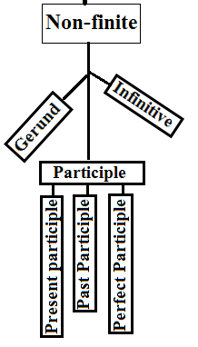

Listen to all these lessons via podcast: podcast name: Alok Pandey learn to speak English fluently.
What is participle
In short, A form of a verb, often ending in “-ed” or “-ing” and comes with auxiliary verbs to make verb tenses or to form adjectives. Therefore, in this article, we will learn about the non-finite verb, participle. To clarify, It is a series of verb, where we have learned.
- What is a Verb?
- Non-finite verb-infinitive:
- Gerund verb.
So, taking this series further, today we will learn about participle.
Present participle.
Therefore, Putting a very precise definition to make it easy. It is a verb form 4 (-ing) that acts as an adjective. The verb form -ing also comes in other different roles. Those all roles I have already discussed in detail on verb topic. So, here we will learn about the verb form 4 (-ing). That appears as an adjective.
For example,
- You should not disturb a sleeping cat.
- There is an amusing story in this book.
- The kettle is full of boiling milk.
Above all, the words sleeping, amusing, and boiling appeared before a noun. So, these words are saying something about a noun. These words are playing a role as an adjective. Hence it is called the present participle.
For example,
- This is an interesting book.
- It was a terrifying story.
- The setting sun view was spectacular.
- The chattering monkey ran away.
- The melting snow made the roads slushy.
Remarks:- If helping “be” verb (is, am, are, was, were) comes before the verb form -ing. The -ing form identity is a continuous or main verb. If the verb form -ing comes in place of a noun (subject or object). It becomes gerund.
Past participle.
As present participle -ing form appears as a gerund, continuous, and participle “adjective”. Likewise, the past participle verb form -3 comprises two structures. When it comes after helping verb, it forms perfect tense. But when it appears before a noun. It is called past participle “adjective“. So, in all the formation, we learned that the identity (parts of speech) of a word we can only decide as per the position of the words.
For some example, to know it the best.
- The injured boy was taken to the hospital.
- The lost treasure was discovered.
- The fallen leaves were blown away by the storm.
So, here the word verb form -3 injured, lost, and fallen has appeared before a noun. Meanwhile, these all words are in the role of an adjective. So these all are the past participle “adjective“.
For some example,
- They are married couples.
- The company is hiring experienced employees.
- I met with a sad boy.
- We are waiting for the predicted weather.
- He wears ironed clothes.
Perfect participle.
Therefore, adding the word “having” with past participle “verb form-3”. The perfect participle is formed. So, It says about a complete action. When a person does two works, and the second work starts after completion of the first work. To form that structure we use perfect participle.
For some example, to know it the best.
- Having reached home I ate food.
- Having finished the report he informed his manager.
- He took a bath Having cooked food.
So, the verb form -3 added with having, having reached, having finished, and having cooked. Thus, these all are perfect participles.
That is to say, after composing this participle lesson, the non-finite series is completed. Thus, in the next topic, we will learn the most significant part of the verb, finite verb.
Must read these topics.